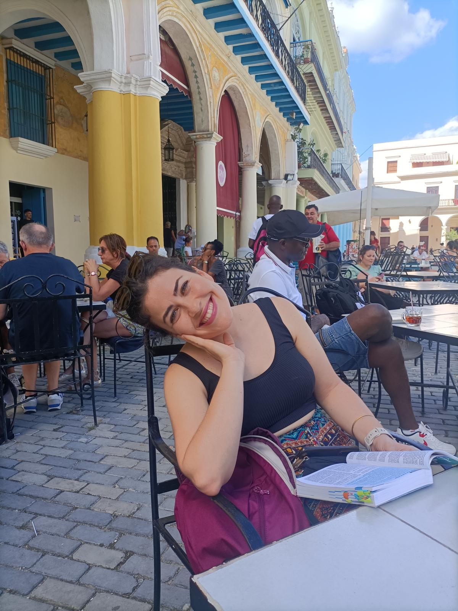

driven by curiosity and the thrill of transforming complex data into discoveries that make a real-world impact.
Welcome to my space!

With a Ph.D. in Systems Biology and extensive experience in Data Science, I bring a unique perspective to data, focusing on designing computational strategies to extract meaning from complex biological questions.
I have led projects from experimental design and data generation to deep analysis and interpretation, crystallizing the results into clear, data-driven narratives.
Curious and creative, I thrive on transforming complexity into understanding and turning data into answers and outcomes that advance scientific understanding and innovation.
Let's create together!
10+ years of experience
in fundamental and biomedical research
50+ large-scale genomics datasets
Produced, analyzed and interpreted
Results translated into impact
through 10+ scientific papers and conference talks
Early in my career, I was drawn to the power of computational methods to uncover the hidden complexity of living systems. What began as a tool to analyze my experiments quickly became a passion, driving me to learn each day and master new analytical approaches. This continuous curiosity now fuels my ambition to keep growing as a scientist.
These are the skills I'm gathering along my way…
And my all-time bioinformatics favorites:
Work in progress! New projects are brewing 🧪✨